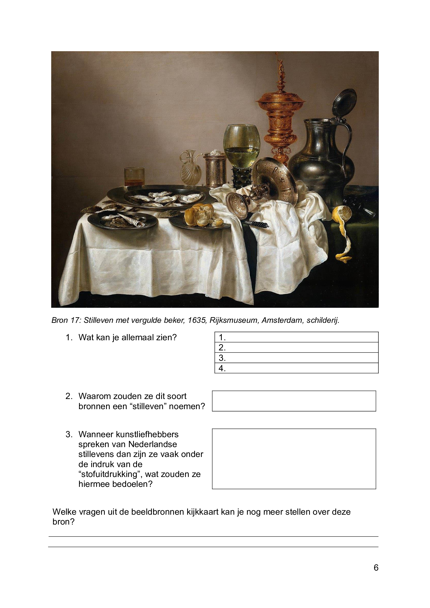
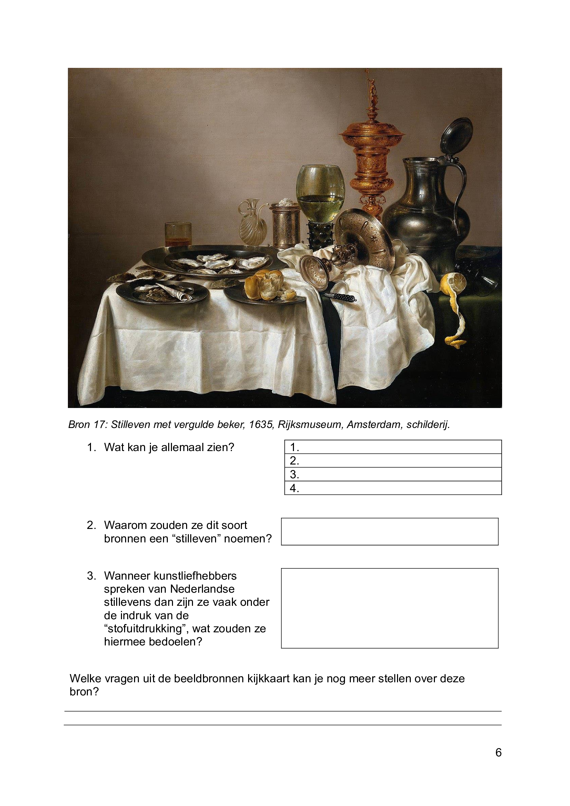

Leerdoelen
Om ervoor te zorgen dat leerlingen in mijn lessen getoetst werden op hun daadwerkelijke kennis, was het belangrijk om hen een zekerheidsgevoel te bieden. Daarom printte ik altijd voorafgaand aan de toetsen een document voor de leerlingen uit, waarin precies werd aangegeven wat ze moesten kennen om goed voorbereid te zijn op de toets. Hoewel deze kennis ook in hun boek te vinden was, bood dit document een belangrijke houvast voor leerlingen die last hadden van toetsstress.
 

Werkboek "Beeldbronanalyse"
Tijdens mijn werk op het NXT stuitte mijn collega, die maatschappijleer aan het derdejaar gaf, op een probleem. De leerlingen hadden enorm veel moeite met het analyseren van stilstaande beeldbronnen. Vanwege de afrondingsfase van mijn opleiding was ik zelf op zoek naar een opdracht binnen de school om mij bij in te zetten, en dit voelde passend. Na uitgebreid onderzoek binnen de school lukte het mij om een werkboek samen te stellen, waarbij leerlingen in het eerste jaar al konden oefenen met beeldbronnen en deze kennis in het derde jaar herhaald kon worden met behulp van een kijkkaart.